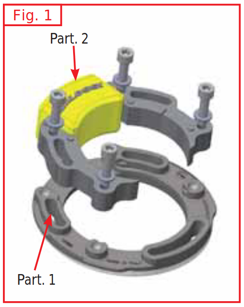
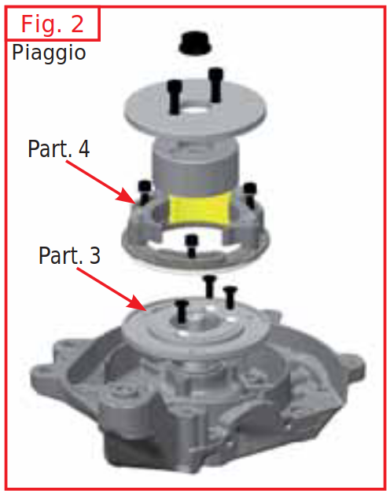

Montaggio e messa in fase
- Assemblare lo statore Part. 1, alla piastra Part. 2 Fig. 1
- Montare sul carter motore la flangia di supporto statore Part. 3 Fig. 2 usando le 3 viti in dotazione e bloccarle a fondo gradualmente.
- Montare la chiavetta nell’apposita sede dell’albero motore e successivamente il rotore facendo attenzione a metterlo in fase perfettamente con la chiavetta ed infine bloccarlo con il dado originale a 30 Nm.
- Montare lo statore Part. 4, Fig. 2 in modo corretto sulla flangia di supporto avendo cura di sistemare il cavo elettrico.
- Fissare lo statore con le 3 viti M5 in dotazione senza bloccarlo, per consentire di effettuare mediante rotazione manuale dello statore stesso la messa in fase. Accertarsi che il rotore giri liberamente senza problemi altrimenti rimuovere gli impedimenti.


Messa in fase con rotazione manuale
- Fig. 3 Ruotare il motore in senso antiorario fino a raggiungere il punto morto superiore e azzerare il comparatore, verificando più volte l’esattezza dell’operazione.
Procedere con la rotazione del motore in senso antiorario fino a quando il comparatore segna 1,55mm dal punto morto superiore. - Tenere ben fermo l’albero motore in questa posizione e fare collimare la linea di riferimento B impressa sul rotore con quella situata sullo statore mediante la rotazione di quest’ultimo, poi bloccare a fondo le tre viti di fissaggio dello statore.
Messa in fase con chiave Malossi - IGNITION TIMING KEY (6018496B)
- Dotarsi di una punta da trapano Ø 5 Part. 6
- Rimuovere la vite Part. 7
- Ruotare il motore fino a raggiungere il punto morto superiore e azzerare il comparatore, verificando più volte l’esattezza dell’operazione.
- Applicare Ignition Timing Key Part. 8 e ruotare il motore in senso opposto alla sua rotazione, fino a quando il comparatore non segna 1,55mm dal punto morto superiore.
- Tenere ben fermo l’albero motore in questa posizione e ruotare lo statore finché il foro della Ignition Timing Key e quello dello statore non sono allineati in modo tale da permettere l’inserimento della punta, poi bloccare a fondo le tre viti di fissaggio dello statore.
- Rimuovere la Ignition Timing Key e rimontare la vite Part. 7
Collegamenti elettrici
- Montare la nuova bobina ad alta tensione Malossi curando scrupolosamente la messa a massa della stessa e montare il cavo candela.
- Collegare il cavetto nero con terminale ad occhiello e faston piccolo al terminale piccolo della bobina e con l’occhiello alla massa della bobina
È buona norma fissare un unico punto di massa per l’impianto accensione al quale vanno collegate la massa della bobina (filo nero), la massa della centralina (filo nero con terminale ad occhiello) e la massa fisica della bobina di alta tensione. - Montare la nuova centralina elettronica Malossi.
- Allacciare i cavi in uscita dallo statore alla centralina tramite relativi spinotti.
- Collegare il cavo arancione con il faston grande al terminale grande della bobina di alta tensione.
- Collegare il cavo nero della centralina con il terminale ad occhiello sotto la vite comune delle masse del nuovo impianto.
- Cavo giallo per interruttore stop motore.
- Collegare il cavo giallo all’interruttore (non fornito nel kit), collegando quest’ultimo a massa. (opzionale)
Per avere un buon funzionamento dell’accensione si consiglia di regolare la distanza fra gli elettrodi della candela 0,6 / 0,65 mm.
Strumenti
- Chiave dinamometrica
- Comparatore con base magnetica
- Punta trapano diametro 5